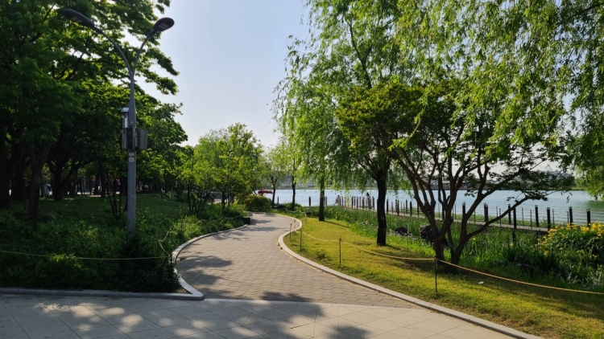

1. 젊음의 거리, 동성로
다양한 식당, 카페, 공방, 미술관, 포차, 펍 등 젊음의 분위기를 즐길 수 있는 대구의 대표 거리에서 신나는 하루를 보내보자
1. Dongseongno, the street of the youngster
Various places like restaurant, cafe, museum, pub will make you turn up!
2. 수성못
여유로운 시간을 즐기고 싶다면 수성못의 거리를 거닐며 생각을 정리하는 시간을 가지는 것은 어떨까?
2. Suseongmot
You can take your time easy while roaming around the beautiful pond

3. 서문시장
대구에서 가장 큰 규모의 시장으로, 면으로 제작된 다양한 제품과 맛있는 음식들까지 여러가지 요소가 모여있는 이 곳의 매력에 빠져보자
3.Seomun market
Largest traditional market in daegu which provides you good quality cotton product and delicious foods
4. 이월드 & 83타워
낮에는 대구에서 가장 큰 놀이공원 이월드, 밤에는 83타워에 올라 대구의 전경을 바라보며 멋진 식사와 함께 시간을 보내는 것이 어떨까?
4. E-world & 83 tower
You can play the whole daytime in e-world and take a beautiful dinner at the top of the 83 tower as watching the sight of the whole city